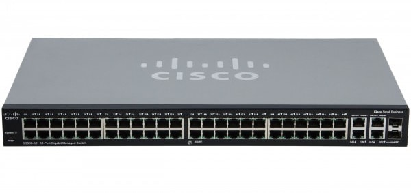
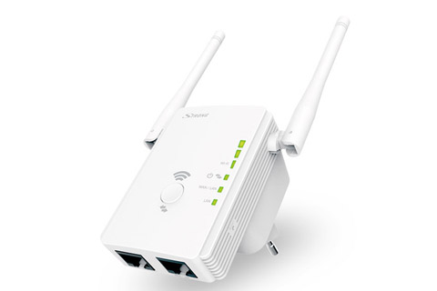
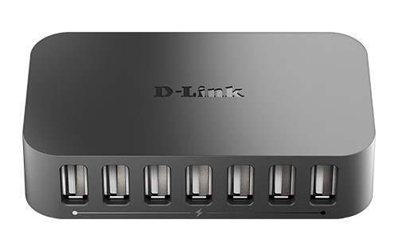
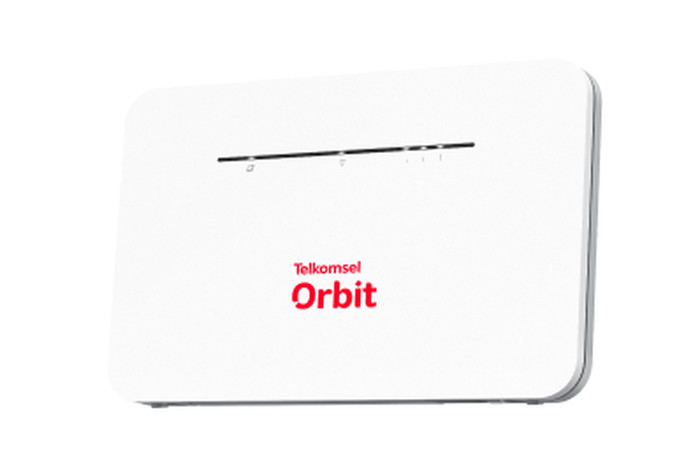
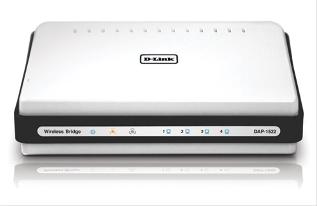
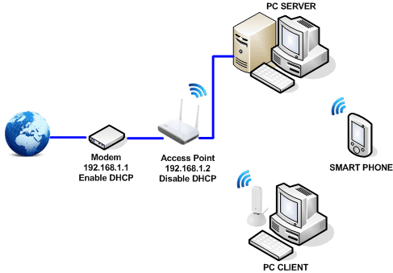
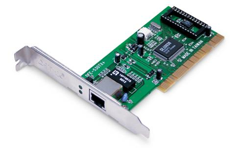

Router
Router adalah perangkat yang menghubungkan jaringan lokal dengan jaringan eksternal (seperti internet). Router juga berfungsi mengarahkan lalu lintas data antar jaringan komputer.

Switch
Switch adalah perangkat keras jaringan komputer yang menghubungkan perangkat dalam jaringan lokal (LAN). Switch bekerja dengan mengarahkan data ke perangkat yang dituju dalam jaringan, sehingga meningkatkan efisiensi dan kecepatan komunikasi data.

Repeater
Repeater memiliki fungsi untuk emperluas daya jangkau signal server,
Mengcover berbagai wilayah minim signal dari server,
Memudahkan akses signal WIFI,
Meneruskan dan memaksimalkan signal.

Hub
Hub pasif berfungsi sebagai pembagi jaringan,akan tetapi tidak melakukan penguatan signal.
Hub aktif berfungsi sebagai penghubung jalur secara fisik dan penguat signal dalam jaringan komputer, dan membutuhkan tenaga listrik tambahan untuk bisa bekerja.

Modem
Modem adalah alat untuk menghubungkan ke internet. Modem mengubah sinyal digital dari komputer menjadi sinyal analog yang dapat ditransmisikan melalui kabel telepon atau kabel TV. Sebaliknya, modem juga mengubah sinyal analog yang diterima menjadi sinyal digital yang dapat diproses oleh komputer.

Bridge
mempunyai beberapa fungsi pada jaringan komputer,fungsi-fungsi tersebut diataranya adalah menghubungkan 2 buah jaringan LAN yang sejenis serta dapat menghubungkan beberapa jaringan komputer yang terpisah.Bridge berfungsi sebagai router pada jaringan komputer yang lebih luas.

Access Point
Access point memungkinkan perangkat nirkabel untuk terhubung ke jaringan kabel. Ini sangat penting di lingkungan di mana mobilitas dan fleksibilitas menjadi kunci, seperti di perkantoran atau tempat umum.

Network Interface Card (NIC)
NIC adalah perangkat keras jaringan komputer yang memungkinkan komputer untuk terhubung ke jaringan. Setiap komputer yang ingin terhubung ke jaringan memerlukan NIC, baik itu terintegrasi dalam motherboard atau sebagai kartu eksternal.
